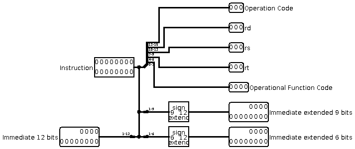
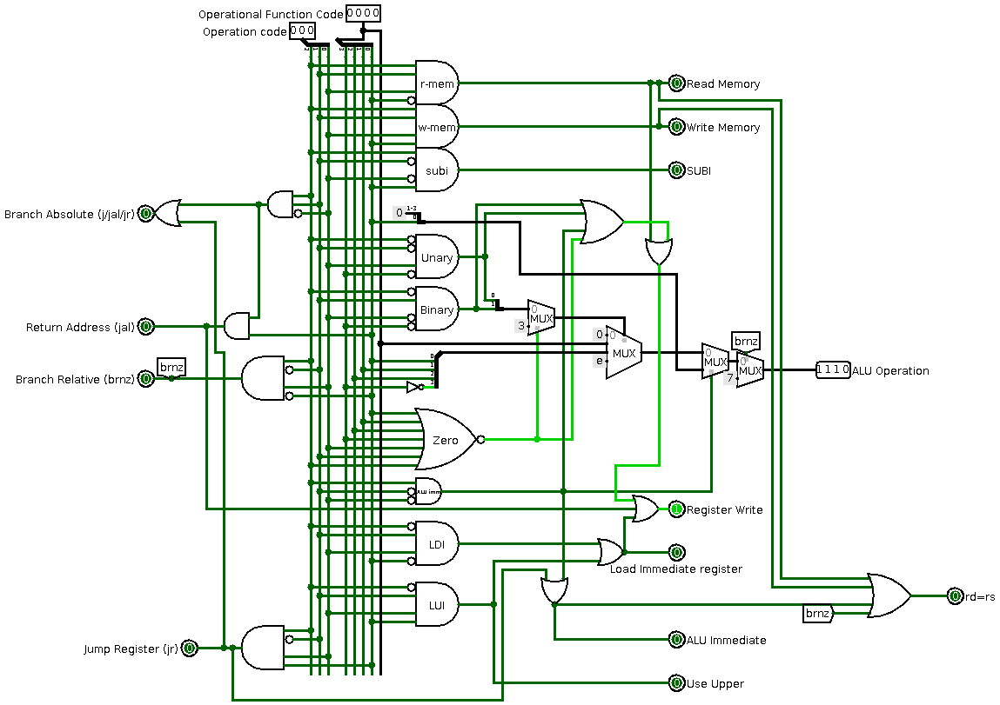

Verslag 6: Full Datapath
Dit verslag werd opgesteld door:
-
Naam: CouldBeMathijs
-
Naam: Creation
Aantal man-uren besteed: 1.5 uur
Moeilijkheidsgraad: 2/10 (1 is heel makkelijk, 10 is heel moeilijk)
Inhoud van de oplossing
De oplossing bestaat uit de volgende bestanden:
Verslag 6
Decoder:

Hier voegden we een 12-bit versie van de Immediate toe, deze is nodig voor sommige nieuwe operaties
Controller:

90% is hetzelfde gebleven, hieronder een oplijsting van de nieuwigheden en veranderingen.
- Branch Absolute: staat aan bij jump, jump and link en jump register.
- Return Adress: staat aan bij jump and link
- Branch Relative: staat aan bij de branch relative not zero instructie
- Jump register: staat aan bij register
- We vervingen de ongebruikte "zero operation" output door de nuttigere output om aan te geven of rd gedupliceerd moet worden naar rs.
- We voegden een case toe aan de ALU-code generator, deze wordt nu 7 (neq) wanneer de branch wordt uitgevoerd, om zo na te kijken of er al dan niet gesprongen moet worden
Full Datapath:
De instructie wordt eerst gesplitst door de decoder waarna de functie- en OP-code naar de controller gaan.
- brnz: De ALU vergelijkt wat in register rd staat met 0, als dit niet gelijk is, laat de AND-gate de branch relative input van de PC aangaan, waardoor de programcounter geïncrementeerd wordt, en daarbij de immediate wordt opgeteld.
- jr: De ALU telt wat in register rd staat op bij de 9-bit immediate (analoog aan addi), en het resultaat gaat naar de branch value van de PC, omdat ook het branch absolute lampje van de controller brandt, stelt de PC zichzelf gelijk aan dit branch value
- j: De 12-bit Immediate wordt rechtstreeks doorgegeven aan de branch value, en de PC overschrijft zichzelf hiermee
- jal: Voert een jump uit (zie bovenstaande), maar slaat eerst de huidige waarde van de PC + 1 op in register r7, hiervoor gebruiken we een nieuwe adder.

Swap: